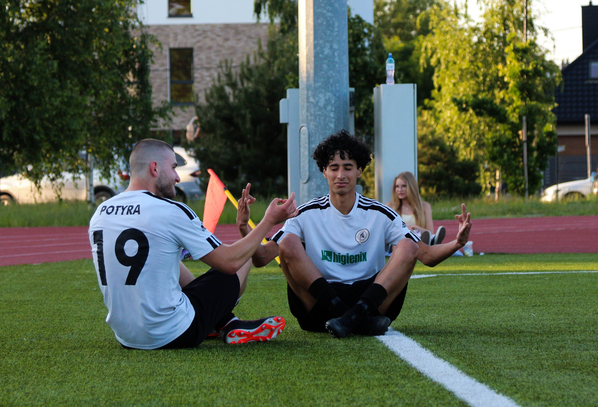

Każdy gol, każda radość w jednym ujęciu
Portfolio sportowe — zdjęcia z boiska, trybun i emocji na żywo.
Usługi

- Relacje meczowe
- Sesje sportowe / treningi
- Sprzedaż zdjęć i prawa do wykorzystania

O mnie
Półprofesjonalny fotograf sportowy – potrafię złapać emocje na boisku, ale wciąż bliżej mi do amatora niż do zawodowca. Uczę się cały czas i odkładam na lepszy sprzęt.
Mój instagram